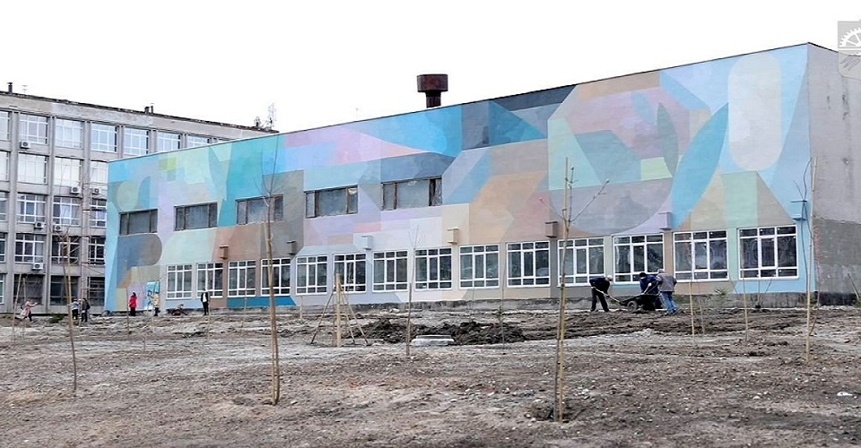
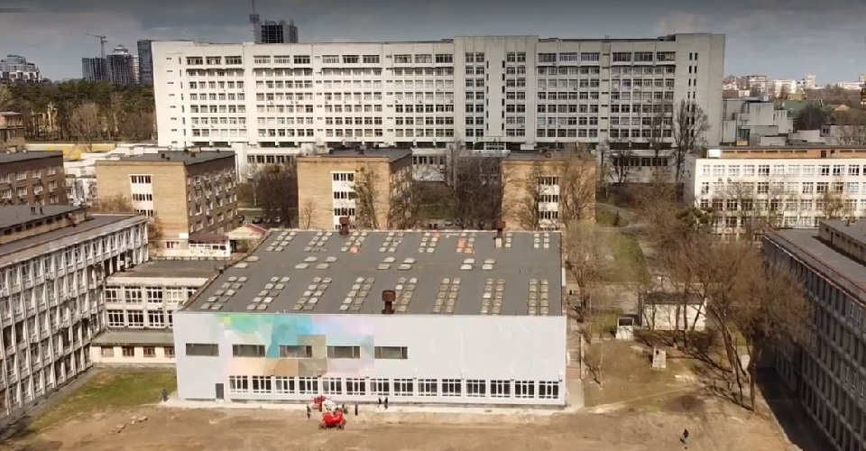
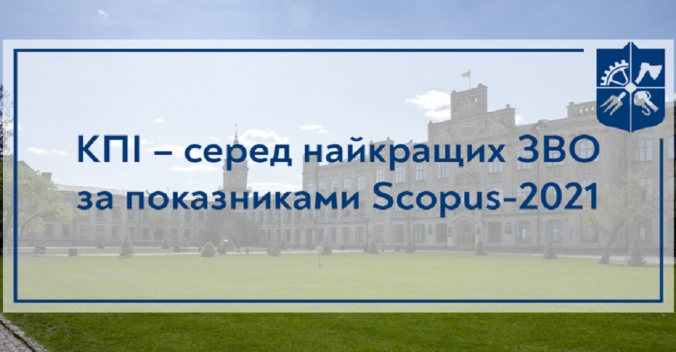

Мурал на стіні 18-го корпусу

У рамках фестивалю «Французька весна в Україні» французький митець Nelio створив стінопис на будівлі 18-го корпусу ФІОТ. Стінопис є абстрактним та мінімалістичним баченням взаємозв’язку природи, науки та техніки. Автор надихався мікро- та макропейзажами, цифровими та природними структурами, намагаючись розмити межу між цими протилежними світами й показати зв’язки, що їх об’єднують. Проєкт реалізовано за ініціативою КПІ спільно з Посольством Франції та Французьким Інститутом в Україні.
Унікальний хаб на базі КПІ

Унікальний хаб і роботодром створюють на базі ФІОТ. Проєкт буде реалізований за прикладом хабу Массачусетського технологічного інституту – одного з найкращих технічних навчальних закладів світу. Простір створюють для розвитку творчості студентської молоді. Невдовзі у цій локації проводитимуть навчання для студентів, залучаючи провідних фахівців ІТ-галузі, створюватимуть стартапи й організовуватимуть різноформатні івенти, зустрічі з представниками профільних компаній, зокрема щодо можливостей працевлаштування. Стіни 18-го корпусу взявся розписувати французький художник-абстракціоніст Неліо. Його роботи вже прикрашають стіни політехнічного інституту в Іспанії, школи, коледжі та інститути в Парижі.
КПІ – серед найкращих ЗВО за показниками Scopus-2021

Портал Освіта.ua оприлюднив щорічний рейтинг українських ЗВО за показниками даних наукометричної бази Scopus. Результати рейтингу засновано на показниках цитованості наукових статей, опублікованих закладами освіти або їхніми фахівцями. КПІ посів п’яте місце серед найцитованіших вишів країни. База даних Scopus регулярно індексує понад 20 тисяч наукових фахових видань з технічних, медичних і гуманітарних наук.
КПІ – серед найкращих університетів світу 2021 року
Глобальне аналітичне агентство в галузі вищої освіти QS Quacquarelli Symonds опублікувало оновлений рейтинг закладів вищої освіти. Загалом було проаналізовано навчальні програми 1 452 вишів із 85 країн світу за різними спеціальностями у 2021 році. Національний технічний університет України «Київський політехнічний інститут імені Ігоря Сікорського» – один із чотирьох українських ЗВО в рейтингу QS World University Rankings by Subject 2021. Серед найкращих університетів світу позиції столичної політехніки закріпила спеціальність «Комп’ютерні науки та інформаційні системи» (501-550). «Важливо відзначити участь у рейтингах за спеціальностями, що вирізняються високим рівнем конкуренції, а саме: з комп’ютерних наук та інформаційних систем, фізики та астрономії, а також інженерних спеціальностей в області нафти і газу», – зазначає директор аналітичного центру QS Бен Саутер. Для формування рейтингу аналітики враховували академічну репутацію, репутацію серед роботодавців, кількість цитувань на одну публікацію (дані міжнародної наукометричної платформи Scopus компанії Elsevier) та організаційний індекс Гірша (показує наукову продуктивність і впливовість наукових досліджень за даними міжнародної наукометричної платформи Scopus компанії Elsevier). Цього року кількість українських закладів вищої освіти в рейтингах за спеціальностями зросла проти 2020-го з двох до чотирьох. Разом із КПІ від України до авторитетного рейтингу увійшли: Київський національний університет імені Тараса Шевченка, Харківський національний університет імені В. Н. Каразіна та Національний університет «Львівська політехніка».